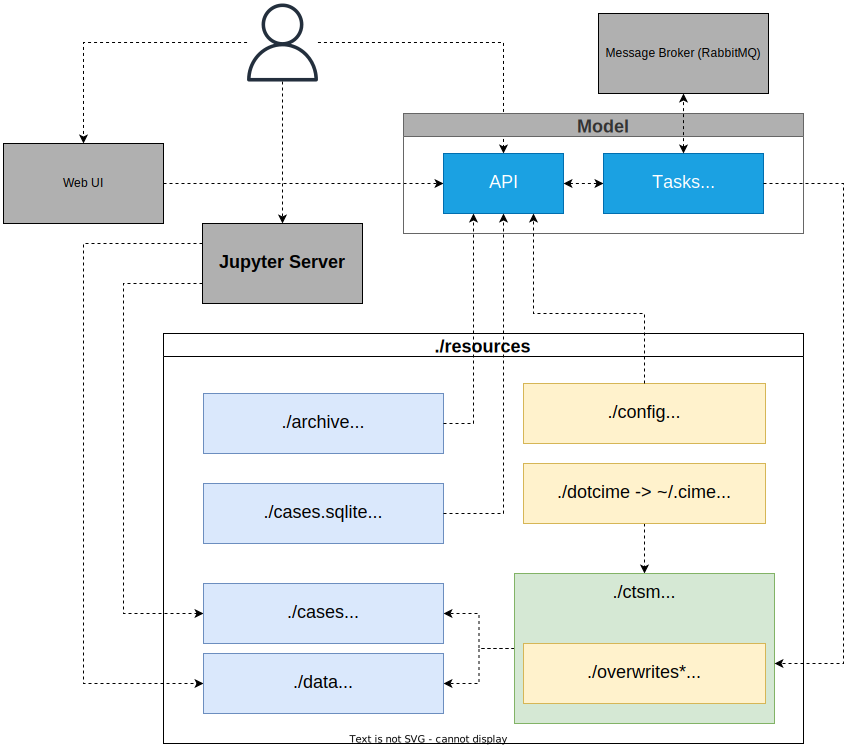

The FATES Platform
2.2 Implementation
Running a FATES-enabled land model requires access to High-Performance Computing (HPC) resources and a moderate level of computer skills to set up, configure, and run the models.
Even though the former requirement becomes less relevant if the simulation scale is small, e.g., when running the model for a single point, the latter can be a challenge for most users.
To run such models on more accessible resources like personal computers, users must go through the following steps:
- Install and configure the dependencies for the model
- Set up and configure the model
- Prepare the required data for their use cases
- Configure the case they want to run
The goal of the NorESM FATES Platform (referred to as the Platform from here forward) is to abstract most of these steps, so end-users can avoid them and instead focus on running their cases and easily access the output data for further analysis.
We have tried to resolve the above issues by developing a set of tools that minimizes direct interaction with the model, and instead provides a high-level interface for it. This includes:
- An Application Programming Interface (API) for configuring and running cases in the model.
- Containerisation of the model and the API.
- Preprocessing input data for the selected sites and preparing configurations for sites and modifiable model parameters.
- A web-based user interface to make interactions with the API more intuitive and user-friendly.
- A Jupyter Server instance with the commonly used python libraries for analysis of input and output data.

Figure [TODO X1]: the architecture and main components of the FATES Platform and their relationship to each other.
In Figure [TODO X1], colored boxes are folders mounted to the container. The model and the API manage the blue ones, and yellow boxes are created by the code maintainers—an asterisk (*) indicates the folder is optional.
The architecture is described in detail in the following subsections.
The target audience for this project is the end-users of the model, specifically those with limited computing skills.
The Platform is designed for land models based on ESCOMP Community Terrestrial System Model (CTSM) with support for FATES.
We have used Norwegian Earth System Model (NorESM), release-nlp0.1.0, for this paper.
The current version [TODO: add version] is based on CTSM version ctsm5.1-dev038.
With the current version, end-users should be able to start and use the Platform by just running the Docker Compose up command.
The only requirements that must exist on their system are Docker and Docker Compose, which their installation is thoroughly documented in their respective documentation pages:
2.2.1 API
The API code can be found at https://github.com/NorESMhub/ctsm-api.
An Application Programming Interface (API) is a set of tools that enables the end-users to interact with a program. The interaction happens by receiving some commands from the users, performing some actions if necessary, and then sending back some results.
We created an HTTP API for the model using FastAPI, a popular high-performance framework for Python. It means the API can be used through any medium that can send and receive HTTP requests, e.g., browsers and libraries like python-requests.
FastAPI generates a REST API based on OpenAPI specifications. It also automatically generates documentation for the API from the docstrings of the python functions, which includes a description of the inputs and outputs and examples. The documentation is interactive and can be accessed through its web-based user interface.
The Platform API is responsible for:
- Getting a copy of the model code (via version control or by downloading the source code).
- Setting up the model's external components.
- Overwriting parts of the model with the specified code in
resources/overwrites(optional). - Defining the machine config, i.e., the Docker container, for the model (see
resources/dotcime). - Creating, configuring, and running cases.
- Serving inputs and outputs of the created cases.
2.2.2 Model dependencies
CTSM and NorESM depend on many external libraries, which can be challenging to install on a personal computer. The difficulties can be due to a lack of cross-platform support, version conflict with existing libraries, or system architecture.
One solution to this is containerization, which is the process of packaging and distributing software in a way that can be run on various platforms. Containers use Operating System-level virtualization. This allows efficient use of resources while isolating the software from other processes running on the host system. All the requirements for packaged software are included in the container.
We used Docker for this purpose. Docker is a widely used and popular containerization tool. The packaged software is called an Image. When a Docker Image is run, it is called a Container, i.e., a running instance of the software.
The main Image created for the Platform is ctsm-api. It contains all the dependencies for the model, the scripts to initialize and configure the model, and the API code that provides access to the model.
The Image can be configured via an environment file (.env), which gives control to users to adjust some initial properties of the model and the Platform, e.g., what version of the model to use and what drivers should be enabled.
In order to allow easier maintenance and better use of resources, some dependencies are not included in the Image. For example, the message queuing broker (RabbitMQ) required by the API, which is needed to manage asynchronous communications between the model and the API, is not included. This service can be added by using the official RabbitMQ Docker Image. Keeping this service out of the Image lets more savvy users pick a different message broker for their use cases.
To address the needs of non-technical users, we have taken care of the extra configurations for the containers by using an orchestration tool called Docker Compose.
Docker Compose is a wrapper around Docker, which allows configuring and organizing all the containers in a single YAML file.
In addition to the previously mentioned Images, we have included an Image for Jupyter Server and one for our Web User Interface (UI) for ctsm-api.
2.2.3 Data preparation and model parameters and sites configuration
[TODO: add info on data preparation]
Both model parameters and sites configurations are provided by the maintainers as JSON files in resources/config/variables_config.json and resources/config/sites.json.
They can be modified by users who are familiar with the model.
The model parameters file contains a list of JSON objects. Attributes of each object are described in table [TODO: X2]. Note that not all types of variables accepted by the model are supported at this point.
| Attribute | Type | default | Required | Scope | Description |
|---|---|---|---|---|---|
| name | string | - | yes | Model | Name of the variable exactly as it should be passed to the model. |
| label | string | - | no | UI | A human-readable label describing the parameter. |
| category | string | - | yes | API | One of the following: ctsm_xml, user_nl_clm, user_nl_clm_history_file, fates, fates_param. |
| type | string | - | yes | Model, API | One of the following: char, integer, float, logical, date. |
| description | string | - | no | UI | Detailed description of the parameter. |
| readonly | boolean | false | no | UI | Whether the parameter can be edited by the user. |
| hidden | boolean | false | no | UI | Whether the parameter should be hidden from the user. |
| allow_multiple | boolean | false | no | API, UI | Whether the parameter accepts multiple values. |
| allow_custom | boolean | false | no | UI | Whether users can enter values other than the ones provided as choices (only applies to those parameters with choices in their validation attribute. |
| validation | Validation object | - | no | API, UI | See Validation table below ([TODO: X3]). |
| default | integer, float, string, boolean | - | no | API | A default value to use. It must match the type specified by the type attribute. If allow_multiple is set to true, it must be a list of values. |
| placeholder | string | - | no | UI | A placeholder value to show to the user. This value is not actually applied if no value is entered by the user. |
| append_input_path | boolean | false | no | API | Whether to adjust a path value based on its relative location in the input folder. |
| Table [TODO: X2] model parameter attributes |
Adjusted values can be validated using the validation attribute. Currently, only the validators described in table [TODO: X3] are supported.
| Attribute | Type | Description |
|---|---|---|
| min | float | A minimum value for numeric attributes. |
| max | float | A maximum value for numeric attributes. |
| pattern | string | A regular expression to match the value against. |
| pattern_error | string | A custom error message for values not matching the pattern attribute. |
| choices | [integer, float, string, boolean] | A list of choices for users to select from. |
| Table [TODO: X3] validation attributes |
Sites in resources/config/sites.json are described as GeoJSON points.
Their configuration is set in the properties attribute of the GeoJSON object, as described in table [TODO: X4].
| Attribute | Type | Required | Description |
|---|---|---|---|
| name | string | yes | Name of the site. |
| compset | string | yes | The component set to use with the model. |
| res | string | yes | The resolution/grid to use with the model. |
| config | [Config object] | no | Config is an object with two keys: name and value.The former must point to a parameter in resources/config/variables_config.json.The latter must be a valid value for that parameters. These are used as default values for the given parameter for the site. |
| Table [TODO: X4] site geoJSON properties |
2.2.4 Web User Interface
The Web User Interface (UI) code can be found at https://github.com/NorESMhub/fates-platform.
The additional web UI is an application that represents the configurable parameters of the model in a user-friendly way. It comes with built-in validations and error handling for the acceptable values of the parameters. Its goal is to streamline the process of editing a case and help users focus on the scientific aspects of their simulations rather than on the technical configuration.
The UI is created using Typescript, a superset of JavaScript language, with the React framework.
2.2.5 Jupyter Server
The included Jupyter Server Image comes with some commonly used python libraries for data analysis. The list of bundled libraries is available at https://github.com/MetOs-UiO/fates_platform_ecological_climatology/blob/main/docker/jupyter/Dockerfile#L7.